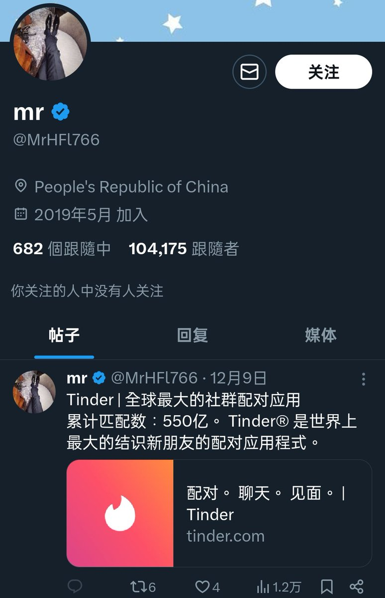
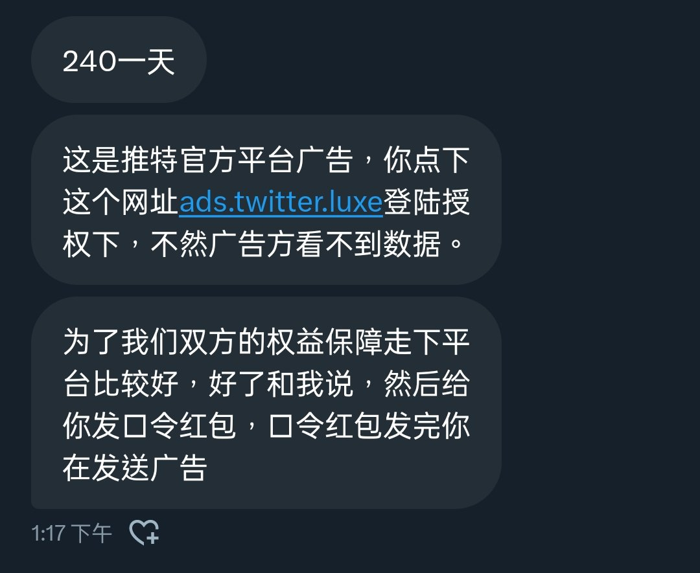

鸿哎彬/处方ps @lingci911c
@hongaibin
RT @dsfin1989: 注意一下，新型推广诈骗，以推广的名义给你链接让你登陆的不要信，骗子会窃取你的账号信息事后顶号，这个网站就算你瞎输信息也会给你过了，遇到直接骂完拉黑


抽象艺术鉴赏家稻上飞归来（全网最尊重奶龙的认妈主播）
@dsfin1989
注意一下，新型推广诈骗，以推广的名义给你链接让你登陆的不要信，骗子会窃取你的账号信息事后顶号，这个网站就算你瞎输信息也会给你过了，遇到直接骂完拉黑 https://t.co/90Pgd31gNO